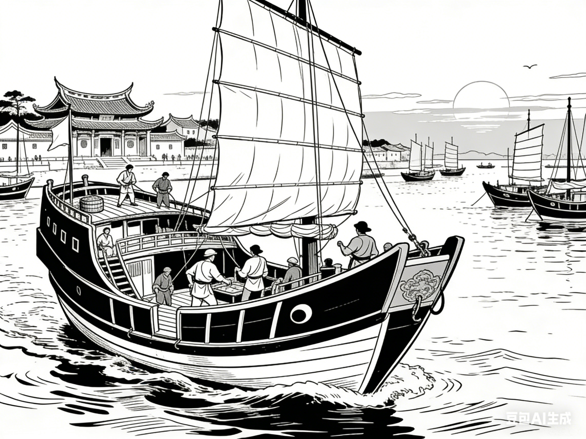
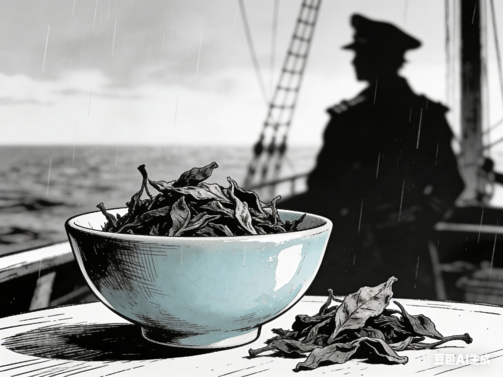

1.南宋期间，一艘泉州商船满载瓷器驶向爪哇
水手：“船长，最后一箱瓷器也装好了”船长：“好，升起帆，咱们出发！这一船宝贝，要让南洋的人看看大宋的手艺。”岸边茶农：“船长，这是今年的新茶，您带着路上喝！”船长（笑着接过）：“多谢，等我回来再带你们的茶去更远的地方！”

2.可是途中遭遇风暴沉没
大副：“船长！台风来了！船底进水了！”
船长（嘶吼）：“快把压舱石扔掉！所有人去抽水！”
年轻水手（哭腔）：“船长，我们要沉了！”
船长（望着船舱里的瓷器）：“护住货舱！这些瓷器，是大宋的脸面！”

3.六百年后，潜水员在海底发现船骸
船长（把茶叶塞进梅瓶）：“这包新茶，就跟着我，一起等重见天日的那天吧。”
水手（抓住船舷）：“船长！我们还能回去吗？”
船长（苦笑）：“会的，总有一天，有人会找到我们，找到这些宝贝。”

4.其中一只梅瓶内竟存有未化的茶叶
潜水员（对着对讲机）：“队长！这里发现了一个完整的梅瓶！里面还有东西！”
考古队长（激动）：“小心打开！千万别破坏了！”
潜水员（倒出茶叶）：“是茶叶！居然还没化！”
考古队长：“这是‘茶叶随瓷外销’的直接证据！太重要了！”

5.原来，船长嗜茶，悄悄将故乡茶园的新茶藏入最后的瓷器，欲与海外之音共品

6.如今茶香已逝，但瓷器上“雨过天青”的釉色，仿佛还映着那位船长眺望故乡的目光
考古队员A：“你看这‘雨过天青’的釉色，上面还有茶渍！”
考古队员B：“这应该是船长当年喝茶时留下的吧。”
队员A（轻抚瓷瓶）：“六百年了，茶香虽散，可这瓷瓶还在，就像他的目光，一直守着这些宝贝。”